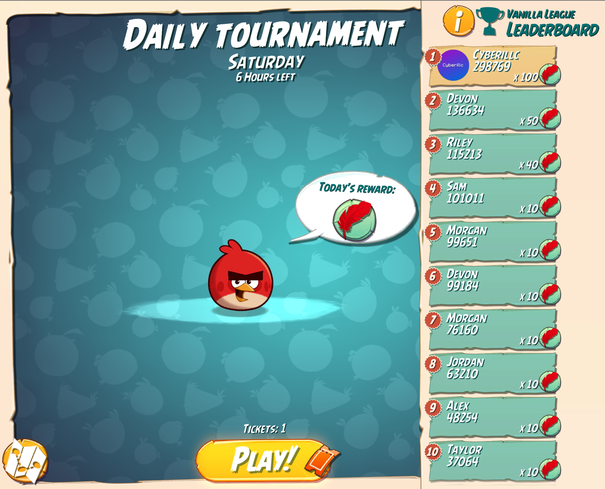
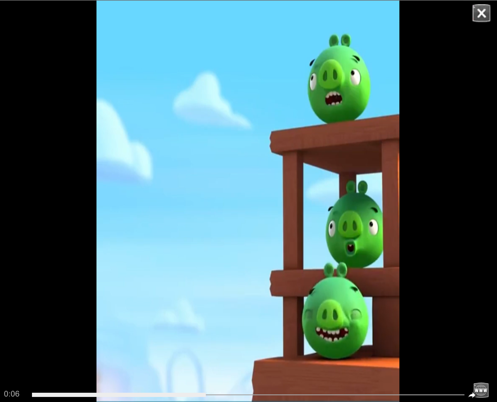
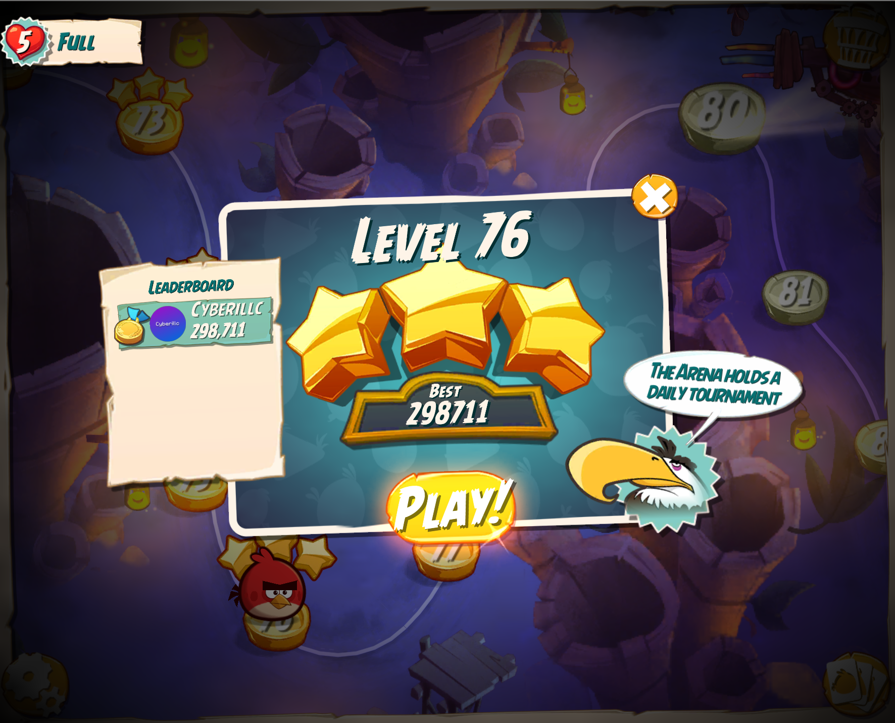

ABUP Plus
A mod of ABUP which improves the game and adds cool new stuff!
Downloads
v1.0.6
Windows (x86_64)
Download →
 macOS (Intel)
Download →
macOS (Intel)
Download →
 Linux (Universal)
Download →
Linux (Universal)
Download →
 Android(Mono) (ARMv7)
Download →
Android(Il2cpp) (ARM64+ARMv7)
Download →
Android(Mono) (ARMv7)
Download →
Android(Il2cpp) (ARM64+ARMv7)
Download →
v1.0.5
Windows (x86_64)
Download →
macOS (Intel)
Download →
Linux (Universal)
Download →
Android(Mono) (ARMv7)
Download →
Android(Il2cpp) (ARMv7+ARM64)
Download →
v1.0.4
Changelog
v1.0.7
April 28, 2026
- Added loading tips.
- Red's Battle Cry is now buffed — his ability scales with each upgrade!
- Added more feathers across levels. If you haven't collected them, go back!
- Terence's Smashing ability now triggers on impact and his velocity won't slow down until the 1.75s window ends. The tradeoff: he launches at 90% of his original speed.
- Better Arena Rewards and lowered card level requirements.
v1.0.6
April 26, 2026
- Added Gifs as profile images.
- Improved the ad player internally.
- Shop no longer appears when you don't have enough money.
- Fixed Terrance stopping completely when hitting stone, i backported his AB2 buff making him powerful for 1.75 seconds, then returning to normal.
v1.0.5
April 25, 2026
- Destruct-O-Meter fills 25% faster based on bird level.
- Removed Analytics.
- UI Scaling actually works now!
- Fixed Sliver flying when hit mid-loop.
- Profile images now work even offline! (Restart required after changing your pfp.)
- Slight tweaks to the Ad Player.
v1.0.4
April 24, 2026
- Sliver's buffed ability recreated from Angry Birds 2 with some script credit from Dive.cs. Her ability scales with each level-up. At Level 8 she's a danger to any pig nearby!
- Options menu change your username and profile picture, toggle or disable custom ads, and a WIP UI scaling setting.
- Pause ads ads now show in the pause menu.
- Faster ad backend rebuilt using Vercel and a JSON manifest for much snappier ad loading.